1과목: 중소기업관계법령
1. 중소기업기본법의 내용에 관한 설명으로 옳지 않은 것은?
2. 중소기업제품 구매촉진 및 판로지원에 관한 법률의 내용 중 ( )에 들어갈 용어는?
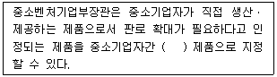
3. 중소기업제품 구매촉진 및 판로지원에 관한 법률상 중소기업제품의 성능인증에 관한 설명으로 옳은 것은?
4. 벤처기업육성에 관한 특별조치법의 내용으로 옳은 것을 모두 고른 것은?
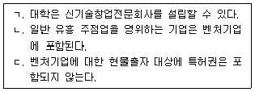
5. 벤처기업육성에 관한 특별조치법령상 신기술창업집적지역의 지정요건에 관한 설명이다. ( )에 들어갈 숫자는?
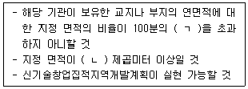
6. 벤처기업육성에 관한 특별조치법령상 벤처기업확인에 관한 내용 중 ( )에 들어갈 숫자는?
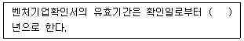
7. 중소기업진흥에 관한 법률상 상당수의 중소기업자가 경영상의 어려움을 겪고 있을 때, 중소벤처기업부장관이 중소기업의 경영정상화를 지원하기 위하여 필요한 조치를 할 수 있는 사유를 모두 고른 것은?
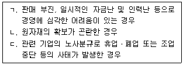
8. 중소기업진흥에 관한 법률상 정의 규정의 일부이다. ( )에 들어갈 용어는?
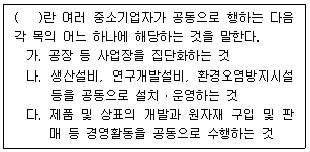
9. 중소기업진흥에 관한 법률상 중소벤처기업부장관이 소기업(小企業)에 대하여 지원할 수 있는 내용으로 옳지 않은 것은?
10. 중소기업 기술혁신 촉진법령상 중소기업 기술진흥 전문기관에 관한 설명으로 옳지 않은 것은?
11. 중소기업 기술혁신 촉진법령상 기술혁신 중소기업자에 대한 출연에 관한 설명으로 옳지 않은 것은?
12. 중소기업 기술혁신 촉진법령상 중소벤처기업부장관이 지원할 수 있는 연구인력파견지원사업의 지원 대상에 해당하는 것을 모두 고른 것은?
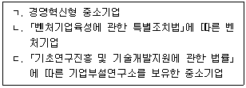
13. 벤처투자 촉진에 관한 법령상 개인투자조합에 관한 설명으로 옳은 것은?
14. 벤처투자 촉진에 관한 법률상 벤처투자조합과 그 업무집행조합원에 관한 설명으로 옳지 않은 것은?
15. 벤처투자 촉진에 관한 법령의 내용으로 옳은 것은?
16. 소상공인 보호 및 지원에 관한 법률상 소상공인시장진흥기금을 조성하는 재원으로 옳지 않은 것은?
17. 소상공인 보호 및 지원에 관한 법률상 ｢감염병의 예방 및 관리에 관한 법률｣에 따른 조치로 인하여 발생한 손실보상에 관한 설명으로 옳은 것은? (단, 권한의 위임 및 업무의 위탁은 고려하지 않음)
18. 소상공인 보호 및 지원에 관한 법령상 소상공인연합회에 관한 설명으로 옳은 것은?
19. 중소기업 사업전환 촉진에 관한 특별법의 내용으로 옳은 것을 모두 고른 것은?
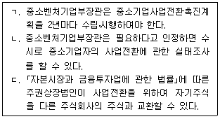
20. 중소기업 사업전환 촉진에 관한 특별법상 규정의 일부이다. ( )에 들어갈 숫자는?
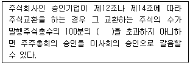
21. 중소기업 인력지원 특별법상 정의 규정의 일부이다. ( )에 들어갈 숫자는?
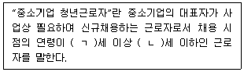
22. 중소기업 인력지원 특별법령상 중소기업 인력지원 기본계획(이하 '기본계획'이라함)에 관한 설명으로 옳지 않은 것은? (단, 권한의 위임 및 업무의 위탁은 고려하지 않음)
23. 중소기업 인력지원 특별법상 중소기업의 인력수급 원활화에 관한 설명으로 옳지 않은 것은?
24. 소상공인기본법령상 소상공인정책심의회(이하 '심의회'라 함)에 관한 설명으로 옳지 않은 것은?
25. 소상공인기본법령의 내용에 관한 설명으로 옳지 않은 것은?
2과목: 회계학개론
26. 재무보고를 위한 개념체계의 위상과 목적에 관한 설명으로 옳은 것은?
27. 간접법으로 현금흐름표를 작성하는 경우 영업활동 현금흐름 계산 시 당기순이익에 가산해야 할 항목들의 총 합계는?
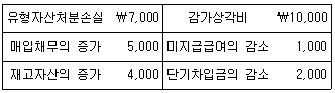
28. 회계기준에서 제시한 '중요한 정보가 불분명해 질 수 있는 상황'의 예에 해당하지 않는 것은?
29. (주)한국은 ￦10,000의 소모품을 현금 매입하면서 모두 소모품비로 인식하였으나, 기말 소모품실사 결과 ￦3,000의 소모품 재고가 남아있는 것을 확인하였다. (주)한국이 이에 대한 기말수정분개를 하지 않았을 경우 재무상태와 경영성과에 미치는 영향으로 옳은 것은? (단, 기초 소모품 재고는 없는 것으로 가정한다.)
30. (주)한국은 매출원가에 20%를 가산하여 매출을 인식한다. (주)한국의 20×1년 기초재고자산과 기말재고자산이 각각 ￦400과 ￦600이고, 당기 매출액이 ￦6,000일 때, 재고자산보유기간(재고자산회전기간)은? (단, 1년은 360일로 가정한다.)
31. 회계순환과정에서 회계상 거래가 재무제표 요소에 미치는 영향을 기록하는 것으로서, 특정 계정에 미치는 영향을 차변과 대변으로 나누어 관련 계정을 지정하고, 측정금액을 결정하여 기록하는 것은?
32. 회계기준에서 제시한 '기업이 재무제표를 작성ㆍ표시하기 위하여 적용하는 구체적인 원칙, 근거, 관습, 규칙 및 관행'은?
33. 표준감사보고서의 필수 기재사항으로 옳지 않은 것은?
34. (주)한국의 상품매매에 관한 자료가 다음과 같을 때, 기말상품재고는?
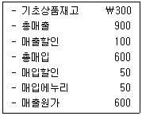
35. (주)한국은 20×1년 중 주식 A를 ￦200에 취득하여, 20×3년 중 ￦250에 처분하였고, 주식 A의 각 시점별 공정가치는 다음과 같다. (주)한국이 주식 A를 당기손익-공정가치측정(FVPL)금융자산과 기타포괄손익-공정가치측정(FVOCI)금융자산으로 각각 분류했을 때의 20×3년도 당기손익 차이는?
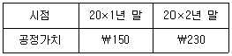
36. 자산재평가와 자산손상회계에 관한 설명으로 옳지 않은 것은?
37. (주)한국은 공장신축을 위해 20×1년 초부터 2년간 ￦500을 차입하였다. 차입금에 대한 이자율은 연 12%인데, 동 차입금 중 ￦300을 4월 초부터 6월 말까지 은행에 예입하여 ￦10의 이자수익이 발생하였다. 공장신축은 20×1년 4월 초 시작하여 20×2년 12월 말 종료되었고, 공장신축을 위한 지출금액은 차입금액을 초과하며, 공장은 적격자산에 해당될 때, 20×1년 (주)한국이 해당 차입금과 관련하여 공장의 취득원가로 인식할 차입원가는? (단, 이자는 월할계산한다.)
38. 회계기준에서 제시한 '경영진이 의도하는 방식으로 자산을 가동하는 데 필요한 장소와 상태에 이르게 하는 데 직접 관련되는 원가'의 예에 해당하지 않는 것은?
39. 부채에 관한 설명으로 옳은 것은?
40. (주)한국은 20×1년 7월 1일에 액면금액 ￦1,000,000의 사채(유효이자율 연 10%, 표시이자율 연 8%, 만기 5년, 이자는 매년 6월 30일에 후급)를 ￦924,164에 발행하였다. 20×2년 말 동 사채의 장부금액은? (단, 이자는 월할계산하며, 단수차이로 인한 오차가 있다면 가장 근사치를 선택한다.)
41. (주)한국의 20×1년도 회계 관련 다음 자료를 이용할 때, 20×1년도 총포괄이익은?
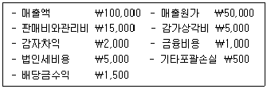
42. (주)한국의 20×1년 기초자본은 ￦50,000이다. 20×1년 중 발생한 자본 관련 거래내역이 다음과 같을 때, (주)한국의 20×1년 기말자본은?
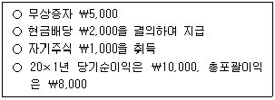
43. 20×1년 초에 사업을 시작한 (주)한국의 20×1년도 회계자료가 다음과 같을 때, 20×1년도 매출총이익은? (단, 모든 매입과 매출은 신용거래로 이루어진다고 가정한다.)
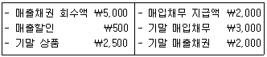
44. 리스회계에 관한 내용으로 옳지 않은 것은?
45. 중소기업회계기준에 관한 설명으로 옳은 것은?
46. (주)한국은 20×1년 3월 중 제품 A를 생산하기 위해 ￦50,000의 재료 B를 투입하였으며, 20×1년 3월 말 재료 B의 재고액은 3월 초에 비하여 ￦10,000이 증가하였다. (주)한국의 20×1년 3월 중 재료 B 매입액은?
47. 경영자문서비스를 제공하고 있는 (주)한국의 손익분기점 매출액은 ￦200,000이고, 공헌이익률은 30%이다. (주)한국이 ￦30,000의 이익을 얻기 위한 매출액은?
48. (주)한국의 20×1년 2분기 제품 A의 매출예산 자료는 다음과 같다.
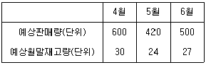
49. (주)한국의 20×1년 4월 제품 A와 B에 관한 자료는 다음과 같다.
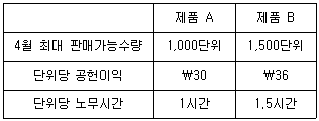
50. 보조부문원가의 배부방법에 관한 설명으로 옳은 것은?
3과목: 경영학
51. 테일러(F. Taylor)가 제시한 과학적 관리법에 관한 특징으로 옳지 않은 것은?
52. 페이욜(H. Fayol)이 제시한 관리원칙에 해당하지 않는 것은?
53. 경영이론에 관한 연구자와 그 이론의 연결이 옳지 않은 것은?
54. 이윤 극대화, 일자리 창출 등 기본적 영역에 해당하는 기업의 사회적 책임은?
55. 주식회사의 특징에 관한 설명으로 옳지 않은 것은?
56. 동일ㆍ유사업종에 속하는 기업들이 법률ㆍ경제적으로 독립성을 유지하면서 일정한 협약에 따라 이루어지는 기업의 수평적 결합방식은?
57. 블레이크(R. Blake)와 모튼(J. Mouton)의 리더십 관리격자 모델과 리더 유형의 연결이 옳은 것은?
58. 집단의사결정에 관한 설명으로 옳지 않은 것은?
59. 앤소프(H. Ansoff)가 제시한 기업 수준의 성장전략에 해당하지 않는 것은?
60. 경영의사결정에 관한 설명으로 옳은 것은?
61. 수직적 통합전략에 관한 설명으로 옳지 않은 것은?
62. BCG 매트릭스 기법에 관한 설명으로 옳은 것은?
63. 경영조직에 관한 설명으로 옳지 않은 것은?
64. 변혁적 리더십에 관한 설명으로 옳지 않은 것은?
65. 경영통제에 관한 설명으로 옳지 않은 것은?
66. 가격전략에 관한 설명으로 옳지 않은 것은?
67. 다음과 같은 특징이 있는 보상제도는?
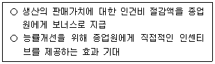
68. A사는 타인자본 500억원, 자기자본 500억원을 조달하였다. A사의 자본비용은 타인자본이 10 %, 자기자본이 20 %일 때, 가중평균자본비용(WACC)은? (단, 법인세는 고려하지 않음)
69. 적시생산시스템(JIT)이 지향하는 목표로 옳지 않은 것은?
70. 공급사슬계획에서 활용하는 정성적 수요예측기법을 모두 고른 것은?
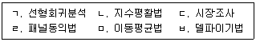
71. 브레인스토밍(brainstorming)에 관한 특징으로 옳지 않은 것은?
72. 리스트럭처링(restructuring)에 관한 특징으로 옳지 않은 것은?
73. 핵심역량에 관한 설명으로 옳지 않은 것은?
74. 중거리무선 네트워크에 해당하지 않는 것은?
75. 고객이 인터넷으로 호텔 객실의 가격을 미리 제시하면 공급사가 판매여부를 결정하는 사례와 같이, 고객이 주체가 되어 원하는 상품이나 아이디어를 기업에 제공하고 대가를 얻는 e-비지니스 모델은?
4과목: 기업진단론
76. 포터(M. Porter)의 산업 경쟁력 결정요소에 관한 설명으로 옳지 않은 것은?
77. 실수분석(real number analysis) 방법에 해당하는 것은?
78. 현금유출이 없는 비용에 해당하는 것은?
79. (주)경영은 최근에 매출은 감소하고 재고자산은 증가하고 있다. 이에 관한 분석으로 옳은 것은?
80. 기업의 재무적 성과와 비재무적 성과를 균형 있게 측정하여 종합적인 경영성과를 도출하려고 도입된 균형성과표(balanced score card; BSC)의 관점에 해당하지 않는 것은?
81. 신용분석의 5C에 해당하지 않는 것은?
82. 금융감독원에서 제시하고 있는 기업 대출에 대한 여신건전성 분류에 관한 설명으로 옳지 않은 것은?
83. 경영분석을 하기 위해 필요한 자료에 관한 설명으로 옳지 않은 것은?
84. (주)경영의 자료가 다음과 같을 때 비유동부채는?
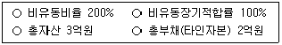
85. 종합지수법(index method)에 관한 설명으로 옳지 않은 것은?
86. 가산법으로 부가가치를 계산할 때 포함되지 않는 항목은?
87. (주)경영의 재무자료가 다음과 같을 때, 안전율(margin of safety ratio)은?
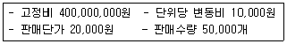
88. 다음 ( )에 해당하는 비율은?
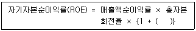
89. (주)경영의 재무상태표가 다음과 같을 때, 유동비율과 당좌비율은?
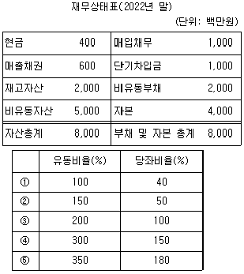
90. 변동비율과 공헌이익률 간의 관계로 옳은 것은?
91. 기업이 자본조달 방안을 결정할 때 고려해야 하는 자본조달분기점이란?
92. 음(-)의 값을 가질 수 있는 재무비율은?
93. 시장가치비율에 관한 설명으로 옳지 않은 것은?
94. 기업에서 조달한 자본의 가중평균자본비용(WACC)을 산정하는데 필요한 요소가 아닌 것은?
95. 기업진단을 위해 각 경영부문별 조사ㆍ분석해야 할 내용으로 옳은 것은?
96. 레버리지에 관한 설명으로 옳은 것은?
97. 기업부실의 징후로 볼 수 없는 것은?
98. 기업부실 분석에 관한 설명으로 옳지 않은 것은?
99. 초기 연도의 기말 배당이 5,000원, 자기자본비용이 10 %, 미래에 연간 5 %씩 지속적으로 성장할 것으로 기대되는 보통주의 가치는?
100. 신용평가에 관한 설명으로 옳은 것은?
5과목: 조사방법론
101. 과학적 연구방법의 특성으로 옳지 않은 것은?
102. 다음이 설명하는 것은?
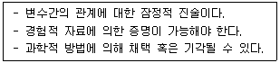
103. 연구목적에 따른 연구방법에 관한 설명으로 옳지 않은 것은?
104. 전국에서 2,500개의 편의점을 표본으로 추출하여 그 2,500개 편의점의 1년간 월매출액을 조사하였다. 이 때 사용한 조사방법은?
1⑤. 과학적 연구절차로 옳은 것은?
106. 연구방법에 관한 설명으로 옳지 않은 것은?
107. 실험설계의 내적타당성 저해요인에 해당하지 않는 것은?
108. 다음이 설명하고 있는 척도는?
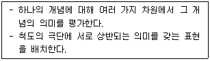
109. 설문 문항 작성의 일반적 원칙으로 옳지 않은 것은?
110. 척도에 관한 설명으로 옳은 것은?
111. 조사연구 시 폐쇄형 문항과 개방형 문항에 관한 설명으로 옳지 않은 것은?
112. 다음이 설명하고 있는 표본추출기법은?
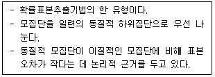
113. 확률표본추출 시 표본크기 결정에 영향을 미치는 요인으로 옳지 않은 것은?
114. 표집오차의 추정이 가능하고 표본자료 분석 결과의 일반화가 가능한 표본추출기법은?
115. 표본추출과정을 순서대로 옳게 나열한 것은?
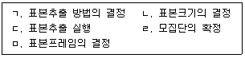
116. 표본추출에 관한 설명으로 옳지 않은 것은?
117. 자료수집방식에 관한 설명으로 옳지 않은 것은?
118. 특정 지역의 술 소비량을 탐색적으로 알아보기 위해서 그 지역의 쓰레기장에 쌓인 빈 술병을 헤아려 보았다. 이와 같은 측정방법은?
119. 다음은 자료수집방식들의 일반적 특성을 상대적으로 비교한 표이다. ( ㄱ )∼( ㄹ )에 들어갈 내용으로 옳은 것은?
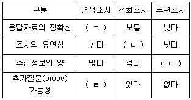
120. 통계적 분석에 관한 검정방법으로 옳지 않은 것은?
121. 다음의 수식이 주어졌을 때, 표본상관계수는?
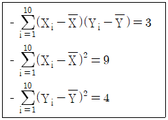
122. 측정의 신뢰도(reliability)와 타당도(validity)에 관한 설명으로 옳지 않은 것은?
123. 회귀분석에 관한 설명으로 옳지 않은 것은?
124. 인천국제공항에서 출국하는 외국인 300명을 대상으로 입국 전 한국의 이미지와 입국 후 한국의 이미지를 조사하였다. 조사된 자료를 기반으로 입국 전ㆍ후 이미지의 차이를 분석하고자 할 때, 적합한 통계 분석 방법은?
125. 회귀분석에서 오차항에 관한 가정은 독립성, 정규성, 등분산성이다. 오차의 독립성을 진단하는 통계량은?